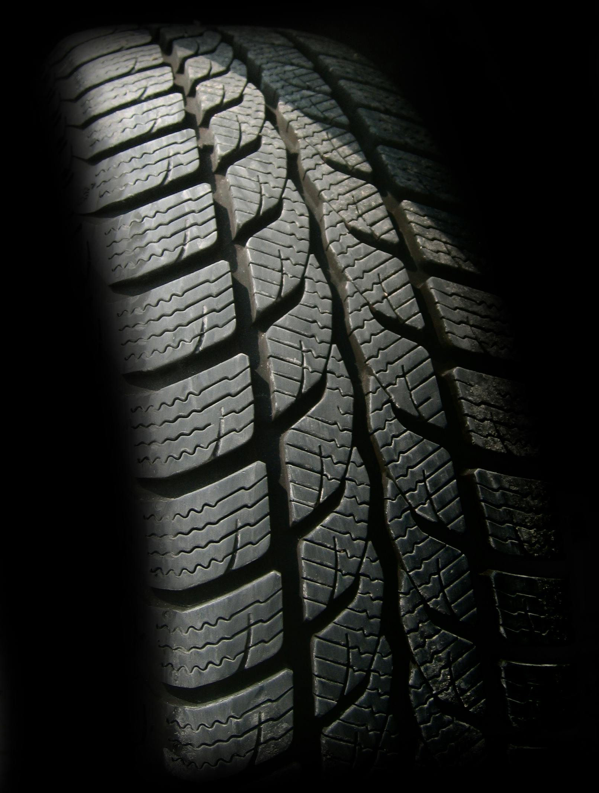

De wielen van uw auto zijn door de fabrikant in nauwkeurig
bepaalde standen geplaatst voor een prettig weggedrag en een
minimale bandenslijtage. Maar na verloop van tijd kunnen er in
deze wielstanden afwijkingen ontstaan. Daardoor is uw auto minder
koersvast, dus minder veilig, en zullen de banden sneller en
onregelmatig slijten.
Trekt uw auto naar een kant? Staat u stuur scheef? Of slijten uw
banden scheef af? Allemaal tekenen dat uw auto waarschijnlijk moet
worden uitgelijnd.
Ook na het vervangen van stuur-, fusee- en spoorstangkogels,
draagarmen, schokdempers, wiellagers of andere werkzaamheden aan
het onderstel van uw auto, dient de uitlijning opnieuw afgesteld
te worden. Tevens is het aan te raden om uw auto te laten
controleren na het rijden over een steen, door een diepe kuil of
na het raken van een stoeprand. Een harde impact of aanrijding kan
er namelijk voor zorgen dat uw wiel een klap krijgt, waardoor de
wielstand kan gaan afwijken.